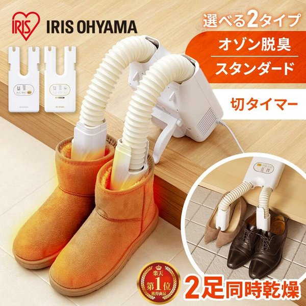
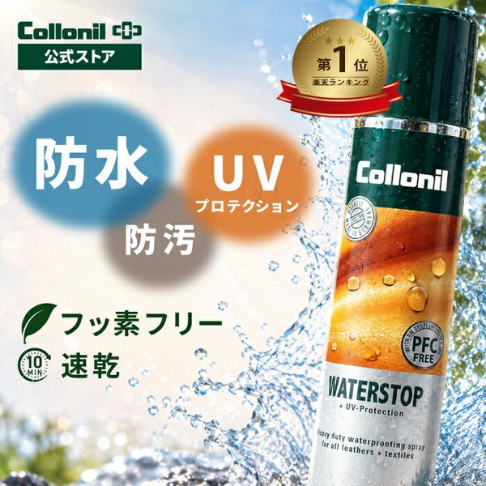
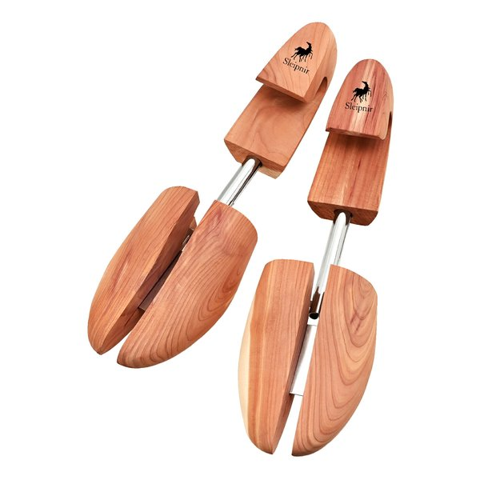
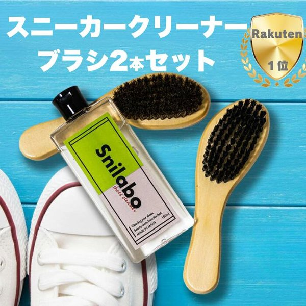
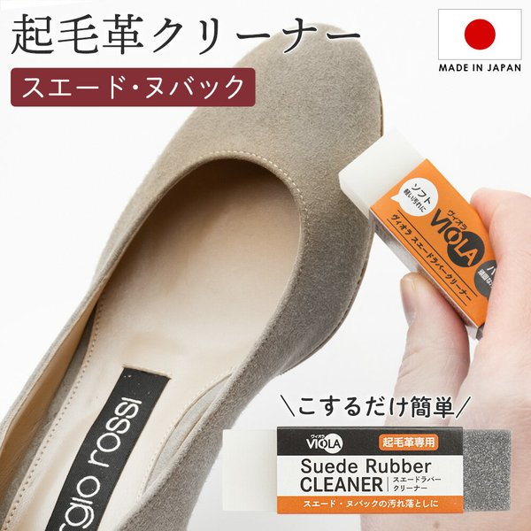
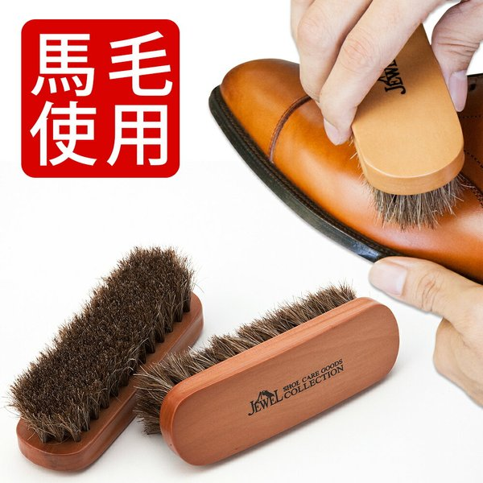
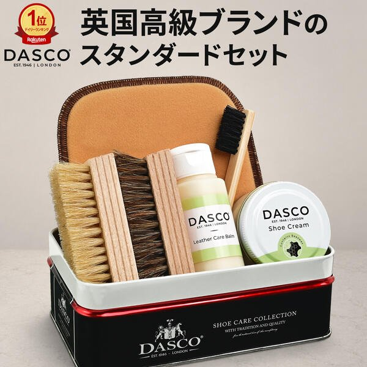
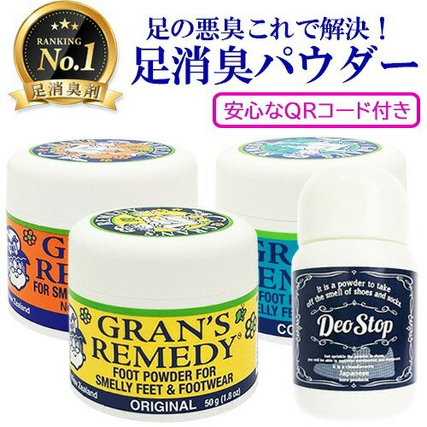
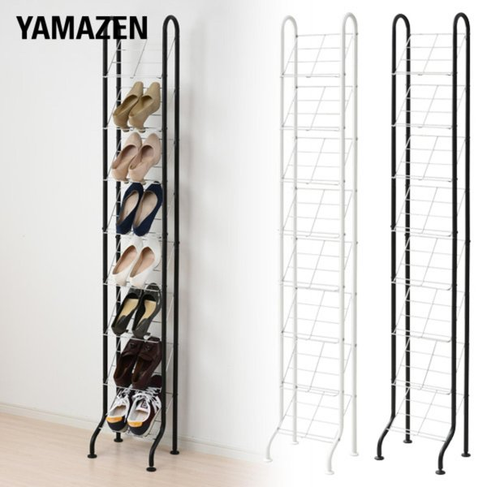
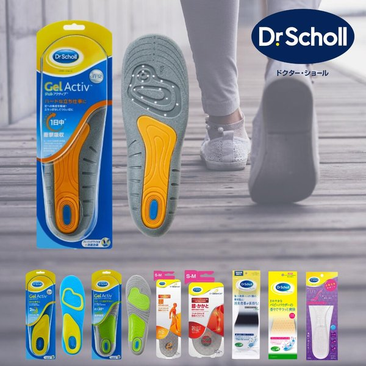

【2026年・靴ケア10選】アイリスオーヤマ 靴乾燥機・コロニル ウォーターストップ・スレイプニル シューキーパー・スニラボ クリーナー・VIOLA 消しゴム・JEWEL 馬毛ブラシ・DASCO スターターセット・グランズレメディ・山善 シューズラック・ドクターショール インソールを実売価格で比較
靴は、履いたあとの10分で持ちが変わります。濡れたまましまえば傷み、汚れを落とさずに置けば染みになります。道具を決めておくと、帰ったあとの手入れが面倒ではなくなります。
選ぶ軸は3つです。まず乾かす。雨の日が続く季節は、乾燥機かシューキーパーがあると翌朝に履けます。次に汚れを落とす。スニーカーはクリーナーとブラシ、スエードは消しゴム、革靴はクリームと馬毛ブラシと、素材で道具が分かれます。最後にしまう場所。ラックやボックスを決めておくと、手入れした靴をそのまま置けます。
本記事では、楽天市場で人気・高評価の靴・スニーカーケア道具10選を、実売価格とレビュー評価つきで写真付き紹介します。
- おすすめ10選 スペック・特徴比較表
- BEST 1｜アイリスオーヤマ 靴乾燥機 シューズドライヤー 2足同時
- BEST 2｜コロニル ウォーターストップ 防水スプレー フッ素フリー
- BEST 3｜スレイプニル スタンダード モデル シューキーパー 木製
- BEST 4｜スニラボ シューズクリーナー 150mL ブラシ2本セット
- BEST 5｜ヴィオラ スエードラバークリーナー 消しゴム
- BEST 6｜ジュエル 馬毛ブラシ 靴ブラシ 馬毛100％
- BEST 7｜ダスコ シューケア スターターセット 6種6点
- BEST 8｜グランズレメディ 足用消臭パウダー 50g
- BEST 9｜山善 シューズラック スリム 幅30cm 8段 SR-308R
- BEST 10｜ドクターショール インソール ジェルアクティブワーク
- 【読者負担0円】買わなくても得する無料サービス
- まとめ：靴・スニーカーケア10選の選び方
| 順位 | 商品名 | ブランド | 最大の特徴・おすすめ理由 | 総合評価 |
|---|---|---|---|---|
| BEST 1 | アイリスオーヤマ 靴乾燥機 シューズドライヤー 2足同時 | アイリスオーヤマ（IRIS OHYAMA） | 2足同時に乾かせる | 4.45 |
| BEST 2 | コロニル ウォーターストップ 防水スプレー フッ素フリー | コロニル（Collonil） | フッ素フリーの処方 | 4.75 |
| BEST 3 | スレイプニル スタンダード モデル シューキーパー 木製 | スレイプニル（Sleipnir） | 木が湿気を吸って乾かす | 4.70 |
| BEST 4 | スニラボ シューズクリーナー 150mL ブラシ2本セット | スニラボ（sneelabo） | ブラシ2本付きですぐ洗える | 4.59 |
| BEST 5 | ヴィオラ スエードラバークリーナー 消しゴム | ヴィオラ（VIOLA） | 水を使わずに汚れを落とせる | 4.08 |
| BEST 6 | ジュエル 馬毛ブラシ 靴ブラシ 馬毛100％ | ジュエル（JEWEL） | 馬毛100％で傷が付きにくい | 4.75 |
| BEST 7 | ダスコ シューケア スターターセット 6種6点 | ダスコ（DASCO） | 6点セットで一通り揃う | 4.64 |
| BEST 8 | グランズレメディ 足用消臭パウダー 50g | グランズレメディ（Gran's Remedy） | 振り入れるだけで使える | 4.57 |
| BEST 9 | 山善 シューズラック スリム 幅30cm 8段 SR-308R | 山善（YAMAZEN） | 幅30cmですき間に置ける | 4.45 |
| BEST 10 | ドクターショール インソール ジェルアクティブワーク | ドクターショール（Dr.Scholl） | かかとと土踏まずを支える | 4.26 |
アイリスオーヤマ 靴乾燥機 シューズドライヤー 2足同時

アイリスオーヤマの靴乾燥機です。2本のノズルから温風を送り、2足を同時に乾かせます。オゾンで脱臭・除菌もできるので、雨に濡れたスニーカーや革靴のにおい対策にも使えます。楽天市場での実売価格は約4,980円（2026年11月時点）。
- 2足同時に乾かせる
- オゾンで脱臭できる
- コンパクトで玄関に置ける
- 革靴は熱で傷むことがあるので、説明書の設定を確認する
コロニル ウォーターストップ 防水スプレー フッ素フリー

コロニルの防水スプレーです。フッ素を使わない処方で、靴やバッグの表面に撥水の膜を作ります。紫外線による色あせを抑える成分も入っていて、革靴にもスニーカーにも使えます。楽天市場での実売価格は約1,650円（2026年11月時点）。
- フッ素フリーの処方
- UVカットで色あせを抑える
- 速乾で出かける前に吹ける
- 吹きかけたあとに乾くまで待つ必要がある
スレイプニル スタンダード モデル シューキーパー 木製

スレイプニルのシューキーパーです。レッドシダーの木製で、靴の中に入れて型崩れを防ぎます。木が湿気を吸うので、履いたあとの靴の乾燥にも使えます。サイズ交換に対応しています。楽天市場での実売価格は約4,400円（2026年11月時点）。
- 木が湿気を吸って乾かす
- 型崩れを防げる
- サイズ交換に対応
- 靴のサイズに合わないと、つま先が窮屈になる
スニラボ シューズクリーナー 150mL ブラシ2本セット

スニラボのスニーカークリーナーです。150mLの洗剤に、馬毛ブラシと繊維ブラシの2本が付いています。泡立てて汚れを浮かせて拭き取る使い方で、水洗いしにくいスニーカーにも使えます。楽天市場での実売価格は約2,180円（2026年11月時点）。
- ブラシ2本付きですぐ洗える
- すすぎ不要で手軽
- 日本製の洗剤
- 白いスニーカーの黄ばみまでは落ちないことがある
ヴィオラ スエードラバークリーナー 消しゴム

ヴィオラのスエード用消しゴムです。起毛革の汚れを、こするだけで落とします。水を使わないので、雨の日に汚れたスエード靴をその場で手入れできます。楽天市場での実売価格は約550円（2026年11月時点）。
- 水を使わずに汚れを落とせる
- スエードとヌバックに使える
- 小さくて持ち歩ける
- こすりすぎると毛足が傷むので、力加減に注意が要る
ジュエル 馬毛ブラシ 靴ブラシ 馬毛100％

ジュエルの馬毛ブラシです。馬毛100％の毛先で、革靴のほこりを払い、クリームを伸ばすのに使います。毛が柔らかいので、傷を付けずに表面を磨けます。楽天市場での実売価格は約1,100円（2026年11月時点）。
- 馬毛100％で傷が付きにくい
- ほこり払いと磨きの両方に使える
- 木の持ち手で握りやすい
- 水洗いすると毛が傷むので、乾いた状態で使う
ダスコ シューケア スターターセット 6種6点

ダスコのシューケアスターターセットです。靴クリーム、ブラシ、クロスなど6点が入っていて、革靴の手入れを始めるのに必要な道具が揃います。黒と無色のクリームが入っているので、色の違う靴にも使えます。楽天市場での実売価格は約2,640円（2026年11月時点）。
- 6点セットで一通り揃う
- 黒と無色のクリーム付き
- 収納ケースに入っている
- クリームの量は少なめなので、よく磨く人は追加が要る
グランズレメディ 足用消臭パウダー 50g

グランズレメディの足用消臭パウダーです。靴の中に振り入れて、においの原因になる菌を抑えます。無香料のタイプがあり、匂いを足さずに消したい人に向いています。楽天市場での実売価格は約1,990円（2026年11月時点）。
- 振り入れるだけで使える
- 無香料を選べる
- 足のにおいと靴のにおいの両方に
- 粉が舞うので、靴の外に出してから入れる
山善 シューズラック スリム 幅30cm 8段 SR-308R

山善のシューズラックです。幅30cmのスリムな8段で、玄関のすき間に置けます。オープンタイプで靴が見渡せるので、出し入れのときに探す手間がありません。楽天市場での実売価格は約5,999円（2026年11月時点）。
- 幅30cmですき間に置ける
- 8段で収納量が多い
- 組み立てが簡単
- オープンなので、ほこりが積もりやすい
ドクターショール インソール ジェルアクティブワーク

ドクターショールのワーク用インソールです。立ち仕事で長く履いても疲れにくいように、かかとと土踏まずを支える形に作られています。消臭加工があり、靴の中のにおいも抑えます。楽天市場での実売価格は約619円（2026年11月時点）。
- かかとと土踏まずを支える
- 消臭加工付き
- SとMの2サイズ
- 靴のサイズに合わせてカットする必要がある
この記事の商品を買う前に、まずは無料で得する選択肢をチェック。どれも登録・利用は0円で、無料期間中に解約すれば料金はかかりません。読みたい雑誌がある人、ポイントを貯めたい人、アンケートなら気軽という人、それぞれに合うものを選べます。
初回31日無料・無料期間中に解約すれば0円 → 楽天ポイントモール｜登録無料で毎日ポイ活
買い物なしでもポイントが貯まる無料サービス → 楽天インサイト｜アンケートに答えてポイント
登録無料・すきま時間のアンケートで貯まる → 楽天カード｜年会費永年無料
新規発行・年会費ずっと0円 →
4つのサービスの違いと使い分けは「出費0円で得する！買わずにポイントが貯まる無料サービス厳選4選」でまとめています。
💡 まとめ：靴・スニーカーケア10選の選び方
靴を長く履くコツは、帰ったあとの手入れを決まった順番にすることです。雨に濡れた日はアイリスオーヤマの靴乾燥機で2足まとめて乾かし、革靴はスレイプニルのシューキーパーを入れて型を戻します。汚れはスニラボのクリーナーとブラシで落とし、スエードはVIOLAの消しゴム、仕上げはJEWELの馬毛ブラシ。一通り揃えるならDASCOのスターターセットが早く、においはグランズレメディ、立ち仕事の疲れはドクターショールのインソールで軽くできます。手入れした靴は山善のシューズラックに戻す。この流れを作ると、靴は同じものを長く履けます。
楽天市場では「5と0のつく日」や「お買い物マラソン」などのキャンペーンに合わせて購入すると、ポイント還元が最大化してお得に手に入ります。ぜひチェックしてみてくださいね。